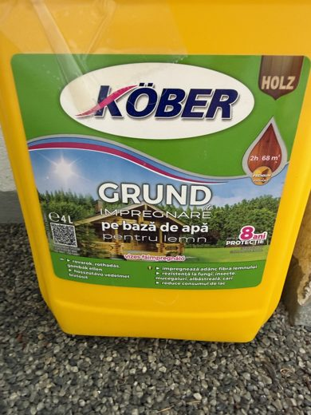

Toate materialele · cu poze + status
Materiale — ce ai,
ce-ai comandat, ce mai trebuie
Fiecare piesa cu poza, codul din proiect (ST, GR, JO...), statusul si unde se foloseste la montaj. Pozele apar si in fiecare etapa din ghidul de montaj.
LE AI
IN COMANDA
DIN OFFCUT
DE LUAT / DE ALES
← inapoi la manual
Le ai deja
Materiale detinute / cumparate mai demult — nu sunt in comanda Hornbach de azi.

STLE AI
Stalpi KVH 100×100×4000
Pasul 1 · cei 4 stalpi ai structurii (spate continui, fata taiati la 1872)

JOLE AI
Barne Leroy 100×100×4000 (nerindeluite)
Pasul 6 · 4 din cele 6 joiste podea

—LE AI
Papuc reazem U 101×100, otel 4 mm
Baza stalpilor — deja turnat in beton

F2LE AI
Köber Grund impregnare 4 L (pe baza de apa)
Finisaj · stratul de baza pe lemnul de structura
In comanda Hornbach
Comanda DV9048520886 din 09.06.2026 · subtotal 3.886,24 + livrare 215 = 4.101,24 lei.
JOIN COMANDA
KVH 100×100×4000 (joiste completare)
Pasul 6 · completare la 6 joiste

GRIN COMANDA
Grinda glulam 90×200×4000
Pasii 4–5 · cele 2 grinzi principale

DLIN COMANDA
Dusumea larice Konsta 28×145×3000
Pasul 8 · dusumeaua (casuta + balcon)

C1IN COMANDA
Coltar rigidizat 100×100×90×3
Pasul 5 · grinda fata pe varful stalpului

C2IN COMANDA
Coltar rigidizat 90×90×65×2,5
Pasul 6 · joiste → grinda, anti-ridicare (2/joista)

H1IN COMANDA
Heco Topix-Plus 8×200 (100 buc)
Pasii 5,7 · suruburi structurale + contrafise

H2IN COMANDA
Heco Topix-Plus 6×100 (100 buc)
Pasul 6 · coltare joiste

H3IN COMANDA
Heco Topix-Plus 6×80 (100 buc)
Blocaje intre joiste

H4IN COMANDA
Suruburi inox A2 5×60 (100 buc)
Pasul 8 · prindere dusumea larice

B2IN COMANDA
Surub hexagonal M12×120 inox A2 (25 buc)
Baza stalpilor in papuc (2/stalp)

B1IN COMANDA
Tija filetata M12 1m DIN975 8.8
Pasii 3–4 · polita grinda spate (taie 4× ~220)

B4IN COMANDA
Piulite M12 DIN934 zincat (100 buc)
Piulite pt tija polita + baza

B3IN COMANDA
Saibe late M12 13×30 (100 buc)
Sub capul/piulita buloanelor M12

F1IN COMANDA
Ulei lemn tec Hornbach Plus 2,5 l
Finisaj · dusumea larice + lemn expus
De luat / de decis
Din offcut (gratis) sau de procurat separat — niciuna nu opreste startul.
PODIN OFFCUT
Polita lemn 100×100 (sub grinda spate)
Pasul 3 · sub grinda din spate
BLDIN OFFCUT
Blocaje intre joiste
Peste grinzi, opresc joistele sa se rasuceasca
CFOFFCUT / VERIFICA
Contrafise (diagonale)
Pasul 7 · rigidizare diagonala la stalpi + sub consola
PTDIN RESTURI
Proptele temporare
Pasii 1,7 · sprijin provizoriu pana la contrafise
?
—DE LUAT
Sol moale sub platforma (scoarta/nisip)
Siguranta · amortizare cadere sub casuta
F3
F3DE ALES
Topcoat colorat exterior
Finisaj final peste grund (culoarea ta)